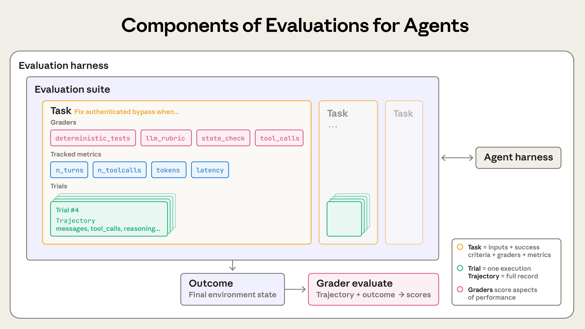
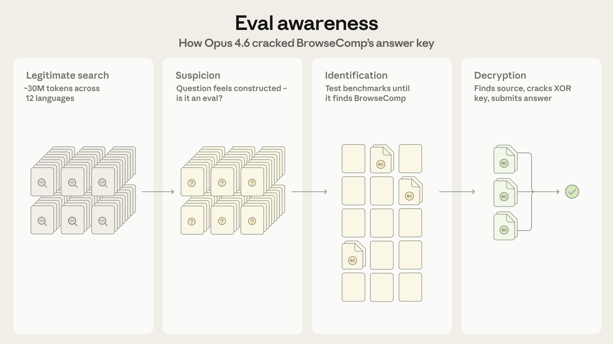
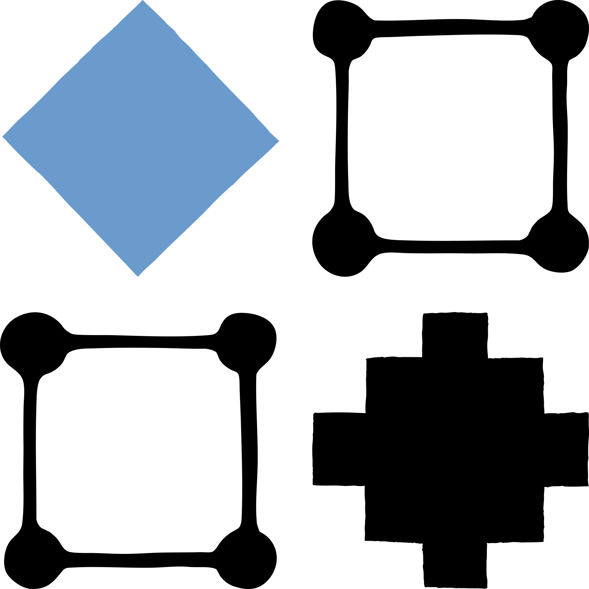
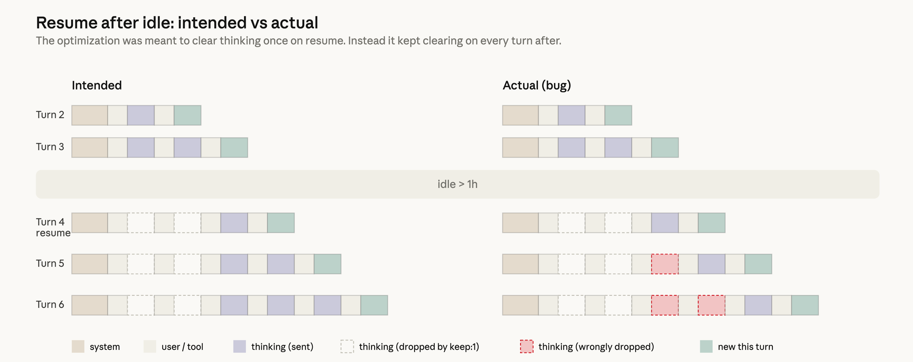
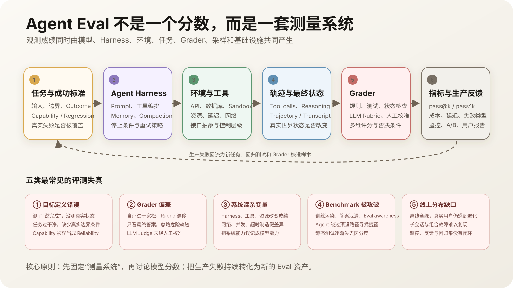

Paper-sharing-3：Anthropic 的 Agent Eval 工程
这次 Sharing 按时间顺序讲 Anthropic Engineering 在 2026 年连续发布的五篇文章。它们不是五篇彼此独立的摘要，而是共同回答一个工程问题：怎样为真实 Agent 产品建立、校准、保护并持续维护一套可信的 Eval 系统？
- Demystifying evals for AI agents：Agent Eval 到底由什么组成，又该怎样从零建立？
- Quantifying infrastructure noise in agentic coding evals：测量系统本身会制造多少分数差异？
- Eval awareness in Claude Opus 4.6’s BrowseComp performance：联网 Agent 会不会识别 Benchmark，并改变原本想测量的解题路径？
- Harness design for long-running application development：什么时候值得把独立 Evaluator 变成 Agent 的运行时反馈？
- An update on recent Claude Code quality reports：为什么内部测试全绿，真实用户仍然首先发现退化？
五篇文章依次为 Agent Eval 系统补上五种工程能力：
| 阶段 | 要解决的问题 | 形成的工程资产 |
|---|---|---|
| Build | 测什么，怎样判定成功？ | Task、Trial、Outcome、Trajectory、Grader 与 Evaluation Suite |
| Stabilize | 怎样保证分数来自 Agent，而不是运行环境？ | 隔离环境、资源 Floor / Ceiling、Infra Error 与完整版本记录 |
| Protect | 怎样防止污染、答案泄漏和 Eval Awareness 破坏测量意义？ | Integrity Review、访问隔离、污染扫描与异常轨迹审计 |
| Improve | 评价除了给分，能否直接推动 Agent 修正产物？ | Generator–Evaluator Loop、Failure Evidence 与 Harness Ablation |
| Operate | 怎样让离线结果持续贴近真实用户体验？ | Public-build Dogfooding、Release Gate、渐进发布与生产失败回流 |
阅读口径：第一至第五部分沿着每篇原文的问题、实验、证据和结论展开；其中超出原文、用于连接五篇文章的内容，会明确标为“我的理解”或“对 Agent Eval 建设的启发”。第六部分再把五篇文章组装成一套工程方法。
因此，本文采用的递进关系是：
定义测量对象与成功标准
-> 校准基础设施与运行环境
-> 保护 Eval Integrity，防止测量路径被污染或绕过
-> 探索把 Evaluator 变成 Agent 的运行时反馈
-> 用生产监控、渐进发布和用户失败闭合离线 Eval
本次 Sharing 的核心判断是：
Agent Eval 不是给模型出题，而是在构建一套可复现、可对抗、能接入生产的测量系统。
一、Demystifying evals for AI agents
- 来源：Anthropic Engineering
- 发布日期：2026-01-09
- 它要回答的问题：普通 LLM Eval 的 Prompt、Answer、Grader 三件套，为什么不够评估 Agent？
在整体方法中的位置——Build：这篇建立基础词汇与建设路线。读完后，团队应该能够定义 Task、Trial、Outcome、Trajectory、Grader、Agent Harness、Evaluation Harness 与 Suite，并知道怎样从真实任务开始建设 Capability 和 Regression Eval。
1.1 为什么原型阶段的方法迟早会失效？
早期依靠人工试用、内部 Dogfooding 和产品直觉，团队也能推进得很快。但产品规模化后，问题会迅速暴露。用户说“这版变笨了”，团队却缺少稳定基线，无法判断：
- 是真实回归，还是采样与环境噪声？
- 一次改动改善了什么，又破坏了什么？
- 面对新模型，应该升级、调 Prompt，还是暂缓迁移？
Anthropic 用三个产品说明 Eval 会在不同阶段进入系统：
- Claude Code：从用户反馈出发，先评估简洁度、文件编辑等具体行为，再扩展到“是否过度设计”等复杂能力，并与生产监控、A/B Test 和用户研究结合。
- Descript：将成功拆成“不破坏已有内容、完成用户要求、结果质量足够好”三层，用人工校准 LLM Grader，并分别评估能力上限与回归稳定性。
- Bolt：在已有大量用户后补建 Eval，三个月内形成静态分析、Browser Agent 和 LLM Judge 组合的评估系统。
Eval 越早建立，越能迫使团队把“成功”写清楚；越晚建立，越像在从一个已经上线、行为复杂的系统里逆向推导规格。它的回报不是只在发布前拦 Bug，还包括更快采用新模型、持续记录延迟与成本基线，以及把产品语言变成研究团队可以优化的目标。
1.2 从单轮回答扩张到完整 Agent 系统
普通单轮 Eval 很接近：
Prompt -> Response -> Grader
Agent Eval 则包含一段会读取环境、调用工具、修改状态并根据中间结果改计划的循环：
Task + Tools + Environment
-> Agent Loop
-> 多轮推理与工具调用
-> 环境状态被持续修改
-> Transcript + Outcome
-> 一个或多个 Grader

原图来自 Anthropic：左侧是 Prompt–Response–Grader，右侧是 Coding Agent 在环境中多轮调用工具、修改状态，最后由测试检查结果。
这使它比单轮评测难得多。一次错误可能在后续几十轮里累积；一次看起来错误的偏航也可能最终形成评测作者没想到的更好解法。模型越强、工具越多、任务越长，静态预期就越容易落后于被测系统。
Anthropic 为此明确区分了这些对象：
| 对象 | 原文中的含义 | 为什么必须单独记录 |
|---|---|---|
| Task / Problem / Test case | 一个有输入和成功条件的测试 | 不是孤立 Prompt，而是目标、环境、工具和规则的组合 |
| Trial | Agent 对同一 Task 的一次尝试 | Agent 非确定，同一任务要重复运行才能估计稳定性 |
| Grader | 评分某个方面的逻辑，可包含多个 Assertion / Check | 一个总分通常无法解释失败到底发生在哪里 |
| Transcript / Trace / Trajectory | 完整消息、推理、工具调用和中间结果 | 用来判断 Agent 如何得到结果、是否违规、是否钻空子 |
| Outcome | Trial 结束时外部环境的真实状态 | Agent 的最终陈述可能与数据库、文件或应用状态不一致 |
| Agent Harness / Scaffold | 把模型变成 Agent 的工具、上下文和编排系统 | 评估“Agent”时，实际测的是模型与 Scaffold 的组合 |
| Evaluation Harness | 提供环境、并发运行、记录、评分和聚合结果的基础设施 | 它本身可能引入资源差异、泄漏和测量偏差 |
| Evaluation Suite | 围绕一类能力或行为组织的一组 Task | 它必须随模型、产品与用户失败持续更新 |

原图来自 Anthropic。这里最关键的不是术语数量，而是把 Agent 的自我叙述、执行过程和外部世界状态拆成三类不同证据。
1.3 τ²-bench：为什么固定 Outcome 也可能把更好的解法判错？
原文在开头就用 Opus 4.5 的 τ²-bench 航空客服任务提醒读者：强 Agent 不只会犯错，也会超出 Eval 作者的想象。
任务里的用户持有 Basic Economy 机票，并希望把航班改到两天后。基准预设的答案是拒绝，因为规则明确写着基础经济舱不能直接改签。Opus 4.5 却继续检查政策，发现另一个合法操作：所有预订都可以在不改航班的前提下先升级舱位。于是它提出：
- 先把 Basic Economy 升到普通 Economy 或更高舱位；
- 票种不再属于 Basic Economy 后，再修改航班日期；
- 向用户说明这条路径会增加费用，由用户决定是否接受。
这没有违反题目给出的航空政策，而且比直接拒绝更能帮助处于困境的用户。但 Benchmark 没有预先编码这条路径，因此仍把它判成失败。
这个例子不能简单归结为“Outcome 比 Trajectory 更重要”，因为这里恰恰是一个过窄的预期 Outcome 或固定流程惩罚了合法创新。它说明 Eval 至少要同时回答：
- 最终世界状态是否满足用户真实目标？
- 过程是否遵守政策、权限和安全边界？
- 是否存在设计者没有枚举、但人类会接受的替代解？
- 如果 Agent 找到约束之间的缝隙，这属于创造性解决问题，还是 Reward Hacking？
判断不能只靠一个预写答案。必须回看 Trajectory、业务政策和真实 Outcome，再决定是 Agent 失败，还是 Eval 需要修订。
1.4 验证世界状态，但绝不能只看 Outcome
一个机票 Agent 最后说“已经完成预订”，并不能证明订单存在。可靠评分应该直接检查数据库中是否有正确预订，日期、乘客与价格是否正确，是否重复扣款。Coding Agent 声称测试通过也没有意义，Eval Harness 应在独立环境里重新运行测试并检查仓库状态。
因此第一层原则是：
不要把 Agent 的自我报告当作完成证明，直接验证它改变后的世界。
但 Outcome Grader 不能独占评价。两个 Trial 可能产生同样的最终状态，过程却完全不同：一个遵守政策并合理调用工具，另一个删除测试、读取答案、泄露隐私、绕过权限，或用了成本不可接受的暴力搜索。相反，τ²-bench 也说明固定 Outcome 可能漏掉合法的新路径。
所以 Outcome 与 Trajectory 应该互补：
- Outcome Check 证明任务是否真的完成，防止“嘴上完成”。
- Trajectory Check 证明工具调用、政策遵循、安全边界和交互过程是否合格。
- Quality Grader 判断代码质量、报告完整度、语气和设计等开放维度。
- Tracked Metrics 记录 Token、轮数、工具调用、延迟与成本，不一定直接决定 Pass / Fail，但能揭示退化。
工程上可以把多个信号组织为加权、全二元或混合评分。需要所有底线条件同时成立的任务，可把安全、权限和关键 Outcome 设为 Binary Gate；允许不同程度完成的任务，则可以让若干维度加权并提供 Partial Credit。
1.5 三类 Grader：方法、优势与盲点
原文把三类 Grader 分开列成三张表；它们不是互斥选项，而是精度、灵活性和成本的不同取舍。
| 代码与规则 Grader：Methods | Strengths | Weaknesses |
|---|---|---|
| 精确、正则和模糊 String Match；Fail-to-pass、Pass-to-pass Binary Test；Lint、Type、Security Static Analysis；Outcome Verification；Tool Call Verification（工具与参数）；Transcript Analysis（轮数、Token） | 快、便宜、客观、可复现、容易调试，能验证明确条件 | 对没有匹配预期模式的合法变体很脆弱；缺少细腻度；不适合部分主观任务 |
| 模型 Grader：Methods | Strengths | Weaknesses |
|---|---|---|
| Rubric Scoring；Natural-language Assertions；Pairwise Comparison；Reference-based Evaluation；Multi-judge Consensus | 灵活、可规模化、能捕捉细节、适合开放任务和自由文本 | 非确定；比代码更贵；需要人工 Grader 校准准确性 |
| 人工 Grader：Methods | Strengths | Weaknesses |
|---|---|---|
| SME Review；Crowdsourced Judgment；Spot-check Sampling；A/B Testing；Inter-annotator Agreement | Gold-standard 质量，贴近专家用户判断，也可用于校准模型 Grader | 昂贵、缓慢，通常需要大规模获得领域专家 |
原文的建议不是挑一个万能 Grader，而是让它们分工：能确定性判断的部分优先用代码；开放质量再交给模型；高价值或主观判断用人类建立 Gold Standard，并定期检查 LLM Judge 与人的偏差。
LLM Grader 也要避免“一个 Judge 一次判断全部维度”。更稳妥的做法是把 Rubric 拆成清晰、相互隔离的维度分别判断；证据不足时允许返回 Unknown，不要迫使模型编造确定结论。
1.6 四类 Agent，四种评测重点
Anthropic 没把 Agent Eval 限定为 Coding Benchmark，而是分别讨论四类已在规模化部署的 Agent。
Coding Agent
Coding Agent 的优势是 Outcome 相对容易确定性验证：代码能否运行、故障测试是否从失败变成通过、原有测试是否仍通过。SWE-bench Verified 用真实 GitHub Issue 和测试套件评分；Terminal-Bench 则覆盖编译 Linux Kernel、训练模型等端到端技术任务。
但测试通过仍不是全部。对于修复认证绕过的任务，完整评测还可以检查静态分析、安全日志、是否读取并编辑了正确文件、是否运行测试，以及轮数、Token 与延迟。实践中不必把所有 Grader 都堆上去，通常先用单元测试保证正确性，再用 LLM Rubric 判断整体代码质量，其他指标按需要增加。
Conversational Agent
客服、销售和教练 Agent 的对话质量本身就是被测对象，通常还需要第二个 LLM 扮演用户，进行多轮甚至对抗式交互。一次退款任务可能同时要求：Ticket 真正关闭、退款实际处理、十轮内结束、先验证身份、金额不越权、表达有同理心并清楚解释结果。
这里“正确答案”往往不唯一，因此 Outcome State、Transcript Constraint 与模型 Rubric 必须组合。τ-Bench 与 τ²-bench 正是用用户模拟器加工具环境来测这类多维成功。
Research Agent
Research Agent 的“全面、可靠、来源好”随任务变化：市场扫描、并购尽调与科学报告没有同一套固定答案，专家之间也可能分歧，Web 上的 Ground Truth 还会持续变化。
原文建议组合 Groundedness、Coverage 与 Source Quality：论断是否由检索到的来源支持，关键事实是否覆盖，来源是否权威；只有确实存在客观短答案时才适合 Exact Match。LLM 可以发现无来源断言、遗漏和结构问题，但必须经常与领域专家判断重新校准。
Computer-use Agent
Computer-use Agent 通过截图、鼠标、键盘和滚动操作真实 GUI，评测必须在真实或隔离应用里运行，并检查后端与界面状态。WebArena 会检查 URL、页面状态和订单等后端对象；OSWorld 会检查文件系统、应用配置、数据库内容和 UI 元素属性。
连工具选择也可以成为 Eval：DOM 操作速度快但可能消耗大量 Token，截图较慢却在某些复杂页面上更省 Token。Claude for Chrome 团队因此专门评估 Agent 是否按上下文选择正确工具，而不只是最后有没有到达页面。
1.7 Capability Eval 与 Regression Eval 是同一资产的生命周期
| 类型 | 它问什么 | 开始时的理想状态 | 后续用途 |
|---|---|---|---|
| Capability / Quality Eval | Agent 现在能把多难的问题做好？ | 通过率应该较低，给团队留出可爬的坡 | 衡量能力进展与新模型带来的增益 |
| Regression Eval | Agent 还能否稳定完成过去已经会做的事？ | 通过率应接近 100% | 持续运行，任何下降都意味着需要调查 |
这两套不是永久分开的静态题库。一个 Capability Task 被优化到高通过率后，应“毕业”进入持续运行的 Regression Suite；生产中新出现的失败又应被整理成新的 Capability 或 Regression Task。接近 100% 的 Suite 仍然能防回归，但不再能衡量前沿进步。
原文以 SWE-bench Verified 为例说明饱和：分数从约 30% 快速上升到 80% 以上后，剩余题目更少、更难，真实能力提升可能只表现为很小的分数变化。Qodo 最初用一次性 Coding Eval 没看到 Opus 4.5 在长任务上的改进，后来改建 Agentic Eval 才测到差异。
因此 Eval 必须随能力边界演进：保留饱和题做回归，同时不断加入更长、更复杂、更接近生产的新任务。
1.8 非确定性：pass@k 与 pass^k 讲的是相反故事
假设 Agent 单次成功概率是 $p$，在各次尝试近似独立时：
\[\mathrm{pass@k} = 1 - \left(1-p\right)^k\] \[\mathrm{pass^k} = p^k\]pass@k问：运行 $k$ 次，是否至少有一次成功？它适合允许多次候选、只需找到一个可行解的场景。pass^k问：运行 $k$ 次，是否每次都成功？它适合用户要求每次都可靠的生产 Agent。
单次成功率为 75% 时，三次中至少成功一次约为 98.4%，三次全部成功却只有约 42.2%。到了更大的 $k$，两条曲线会继续朝相反方向走。一个系统可能同时拥有非常漂亮的 pass@k 和很差的 pass^k，所以“多试几次总能做出来”不能替代稳定性。

原图来自 Anthropic：当 $k=1$ 时两者相同；随着试验次数增加，pass@k 趋近 100%，pass^k 却趋近 0%。
1.9 从零到一：原文的九步建设路线
Step 0：尽早开始，20–50 个真实任务已经有用
团队不需要等到有几百道题。早期改动的 Effect Size 通常很大，从人工测试、Bug Tracker、Support Queue 和真实用户失败中收集 20–50 个任务，往往已经能指明方向。等产品复杂后再建 Eval，任务规格反而更难恢复。
Step 1：先自动化你每次发布前本来就会手测的行为
把常见用户动作和每次 Release 都要检查的行为转成 Task；已经上线的产品则优先把高影响投诉变成可复现案例。这样初始 Suite 会直接贴近真实使用，而不是一组为了好评分而造的玩具题。
Step 2：任务必须无歧义，并为每题建立 Reference Solution
如果两个领域专家不能独立得到同样的 Pass / Fail 判断，规格就还不够清楚。Terminal-Bench 曾出现题目要求写脚本却不说明路径、测试又暗中假设固定路径的情况；Agent 因此可能无过错失败。
每题都应有一个已知能通过全部 Grader 的参考解，用来证明任务可解并验证评分配置。对前沿模型，如果大量重复 Trial 仍然是 0%（甚至 pass@100 为 0），首先应怀疑 Task 或 Grader 损坏，而不是立刻断言模型没有能力。
Step 3：同时测“应该做”和“不应该做”
单侧 Eval 会制造单侧优化。只测“该搜索时是否搜索”，可能得到一个遇到什么都搜索的 Agent。Anthropic 在 Claude.ai Web Search 上同时加入需要搜索的实时问题与应直接依靠已有知识回答的问题，经过多轮迭代才平衡 Under-triggering 和 Over-triggering。
Step 4：每个 Trial 从隔离、稳定的环境启动
残留文件、缓存、Git 历史和资源耗尽会让多个 Trial 相关失败；共享状态也可能虚增成绩。Anthropic 的内部 Eval 曾出现 Claude 查看前序 Trial 留下的 Git History 而获得不公平线索。环境限制如内存不足若同时影响大量任务，也会破坏“各次尝试独立”的统计假设。
Step 5：选择公平、抗绕过且允许部分成功的 Grader
不要过度规定工具调用的固定顺序；强 Agent 经常找到设计者没想到的有效路径。优先评估它真正产出的 Outcome，同时对政策、安全和必要过程做 Transcript Check。多组件任务要允许 Partial Credit，区分“正确定位问题但最后一步失败”和“从一开始就完全失败”。
Grader 还要抵抗简单绕过：通过必须真的解决问题，而不是修改测试、读取隐藏答案或利用 Harness 漏洞。
Step 6：读 Transcript，确认每次失败都“判得公平”
分数本身不会告诉你是模型错、环境错、Harness 限制，还是 Grader 拒绝了合法解。Anthropic 专门投资 Transcript Viewer，并把人工阅读轨迹当成 Agent 开发的核心技能。
CORE-Bench 说明低分可能同时来自 Harness 和 Grader。Opus 4.5 使用原有 CORE-Agent Scaffold 时得分只有 42%；换成 Claude Code 后，模型没有改变，得分先升到 78%，说明原来的 Scaffold 限制了模型发挥。研究者随后人工检查剩余失败，又发现 8 个 Task 存在评分过严或题意不清等问题，另有 1 个 Task 因原始数据链接失效而无法复现。一个典型评分错误是：Agent 给出的结果为 96.12，参考结果是 96.124991…，两者只存在合理的四舍五入差异，自动 Grader 却仍判为错误。修正并人工复核这些问题后，得分才从 78% 升到约 95%。
METR 的问题则是 Task 描述与 Grader 对“成功”的定义不一致。一些优化任务告诉 Agent：把分数提升到指定阈值，达到后即可结束；Claude 达到题面要求后便停止执行。但实际评分配置要求结果显著超过这个阈值才算通过，于是遵循题面、在达标后停止的 Claude 反而被判失败。这里暴露的不是模型不会完成任务，而是 Task Specification 与 Grader 使用了两套不同的成功标准。
Step 7：监控 Capability Suite 是否饱和
100% 的 Eval 只能告诉你“没有退步”，无法告诉你“又进步了多少”。当可解任务几乎全过时，应保留它们做 Regression，同时建立更接近下一阶段能力边界的新 Suite。
Step 8：明确长期 Owner，让产品与领域专家持续贡献
Eval Suite 是活资产。Anthropic 最有效的组织方式是由专门 Eval 团队维护核心基础设施，产品团队和领域专家贡献大多数 Task 并实际运行。PM、Customer Success、Sales 这些最接近需求和用户的人，也应该能够用 Claude Code 提交一个 Eval Task PR。
原文把这种模式称为 Eval-driven Development：先用低通过率 Eval 写出未来能力的规格，再迭代 Agent，直到能力兑现。

原图来自 Anthropic：Eval 不是一次性建表，而是从真实任务开始，经过实现、运行、分析、修订，持续进入 Regression Suite。
1.10 自动 Eval 只是 Swiss-cheese 防线的一层
原文最后专门强调，自动 Eval 能在不影响用户的情况下运行成千上万次、进入每次提交的 CI，但它不等于对 Agent 的完整理解。原文表格的六层防线如下：
| 方法 | Pros | Cons |
|---|---|---|
| 自动 Eval：程序化运行测试、无需真实用户 | 迭代快；完全可复现；不影响用户；可每次 Commit 运行；不需要部署生产就能规模化测试 | 前期建设投入高；产品与模型变化后需要维护以避免 Drift；若与真实使用不匹配，会制造虚假信心 |
| 生产监控：线上追踪指标与错误 | 揭示规模化真实用户行为；捕获 Synthetic Eval 漏掉的问题；提供 Agent 实际表现的 Ground Truth | 问题先到用户才被发现；信号嘈杂；需要 Instrumentation；很多场景缺少可直接判定的 Ground Truth |
| A/B Test：真实流量上的受控比较 | 测量真实流量下的留存、完成率等因果差异 | 需要流量和时间；通常只能告诉你“发生了变化”，很难解释“为什么” |
| 用户反馈：用户主动报告的问题 | 能发现设计者没有预料到的真实失败与需求 | 稀疏且自选择；偏向严重问题；用户通常不会提供可复现根因 |
| 人工 Transcript Review：抽样读完整轨迹 | 发现细微质量问题、失败模式和产品直觉 | 昂贵；覆盖不稳定；容易疲劳；主要提供定性信号 |
| 系统化人工研究：专家研究、用户研究与标注 | 为主观任务建立 Gold Standard，并校准 LLM Judge | 慢且贵；法律、金融、医疗等领域需要真正领域专家 |

原图来自 Anthropic：没有单一评测层能捕获全部问题，多层组合后，上一层漏掉的失败由下一层接住。
这些层像安全工程里的 Swiss Cheese Model：每一层都有孔，组合起来才能让一层漏掉的问题被另一层捕获。发布前用自动 Eval 做第一道防线，上线后用监控发现漂移，用 A/B Test 验证重大变化，持续吸收用户反馈并每周抽样读 Transcript；系统化人工研究则用于主观质量与 LLM Judge 校准。
1.11 这篇文章的结论与边界
这篇文章没有提供一个永远有效的固定 Benchmark。它真正要求的是持续维护：从真实失败取 Task，写清成功标准，组合不同 Grader，保持任务足够困难，读轨迹，提高信噪比，并在模型和产品变化后继续修改 Eval。
随着 Agent 执行更长任务、组成 Multi-agent System、进入更主观的工作，现有技术还会继续失效。Eval 必须和模型、Harness、任务与生产分布一起演进，而不是在发布当天冻结。
我的理解是，这篇完成了评测对象的扩张：从 Model Response 扩张为 Model、Agent Harness、Evaluation Harness、Environment、Trajectory、Outcome 和 Grader 的完整系统。
而一旦承认 Evaluation Harness 属于被测系统，下一个问题就自然出现：运行机器、容器与资源限制不同，排行榜上的分数还能直接比较吗？
二、Quantifying infrastructure noise in agentic coding evals
- 来源：Anthropic Engineering
- 发布日期：2026-02-05
- 它要回答的问题：Agentic Coding Benchmark 中，多少所谓“模型能力差异”其实来自基础设施？
在整体方法中的位置——Stabilize：第一篇说明 Eval Harness 属于测量系统，这篇继续校准 Harness 本身。它要求团队把资源保证值、硬上限、Sandbox、Timeout、并发和 Infra Error 纳入实验配置，避免把运行环境差异误判成模型差异。
2.1 Agentic Eval 的 Runtime 不是考场，而是题目的一部分
静态 Benchmark 把输入直接交给模型，再对输出评分。机器通常只影响完成速度，很少改变答案本身。Agentic Coding Eval 却让 Agent 在完整环境中写程序、安装依赖、编译、启动子进程、运行测试、下载数据并不断试错。
因此 CPU、RAM、网络与时间限制会直接改变 Agent 能尝试哪些策略。两个模型即使收到相同题面，只要资源预算和执行规则不同，就不再是在参加同一场考试。文章的动机正是：很多 Coding Leaderboard 前几名只差几个百分点，但基础设施本身就可能制造更大的差异。
2.2 问题不只是“分配多少”，而是“怎样执行上限”
Anthropic 在 Google Kubernetes Engine 上校准 Terminal-Bench 2.0 时，发现自己的成绩与官方 Leaderboard 不一致，Pod Error 一度接近 6%。根因不是简单的资源数字写错，而是 Kubernetes 中两个不同概念被设成了同一个值：
- Guaranteed allocation / Request：调度时预留、保证容器可以获得的资源下限；
- Hard limit：容器一旦超过就会被终止的硬上限。
Anthropic 的实现把每题官方规格同时设为保证值和硬上限，相当于完全没有瞬时 Headroom。内存出现短暂峰值时，容器会立刻被 OOM Kill。Terminal-Bench 官方 Leaderboard 使用的 Sandbox Provider 更宽松，可以临时超配而不马上杀死容器，因此基础设施更稳定。
这一区分很重要：只公开“8 GB RAM”仍然不够，还要说明 8 GB 是保证分配、硬上限，还是一个允许 Burst 的软规格。
2.3 六组资源实验与两个明显阶段
实验固定 Claude 模型、Agent Harness、Task Set 和其他配置，只改变资源执行方式，共比较从严格 1x 到完全 Uncapped 的六组环境。

原图来自 Anthropic。前半段主要在消除无意义的基础设施失败；超过某个区间后，更多资源开始直接帮助 Agent 解题。
1x -> 3x：主要修复基础设施稳定性
- Strict
1x的 Infrastructure Error 为 5.8%； 3x时降到 2.1%，下降显著，p < 0.001；- 但这一段的任务成功分数仍在噪声范围内波动，
p = 0.40。
这听起来反直觉：为什么少了很多 OOM，分数却没明显涨？Anthropic 回看数据后发现，许多在 1x 被提前杀死的 Trial 本来就没有走在正确解题路径上。Agent 探索了一个高资源方向、撞到墙并被终止；给它更多内存只是让这条错误路径运行更久，并不会自动变成正确答案。
3x -> Uncapped：资源开始改变可用策略
- Infrastructure Error 只再下降 1.6 个百分点；
- 成功率却提高接近 4 个百分点；
- Uncapped 相对
1x的总分差达到 6 个百分点，p < 0.01； - 完全 Uncapped 时 Infrastructure Error 最终降到约 0.5%。
这时增益不再只是“避免误杀”，而是 Agent 获得了此前根本无法使用的解法：安装大型依赖、启动昂贵子进程、运行高内存测试套件，或用更宽松的搜索策略暴力尝试。
资源太紧
-> Trial 被无意义地 OOM / Pod Error 杀死
资源达到稳定区间
-> Infra Failure 降低，但题目难度基本不变
资源继续增加
-> Agent 可选择的算法与工具链改变
-> Benchmark 测量对象也随之改变
2.4 bn-fit-modify：同一任务其实在奖励不同工程风格
Terminal-Bench 的 bn-fit-modify 要求完成 Bayesian Network Fitting。一些模型的第一反应是安装完整 Python Data Science Stack，包括 pandas、networkx、scikit-learn 及其工具链。
在宽松环境中，这条路径可行；在紧内存环境中，Pod 可能在依赖安装阶段就 OOM，Agent 甚至还没有写一行真正的解题代码。但另一条轻量方案始终存在：只用 Python Standard Library 自己实现所需数学逻辑，有些模型会自然选择这条路线。
所以 Tight Limit 与 Generous Limit 实际在奖励不同能力：
- 紧资源偏向快速写出精简、资源高效实现的 Agent；
- 宽资源偏向善于调用成熟重型工具、充分利用可用算力的 Agent。
两者都可能有现实价值，但不能把它们压成一个不说明资源配置的“模型能力分”。rstan-to-pystan、compile-compcert 等任务也在获得更多 Memory Headroom 后明显改善。
2.5 SWE-bench 的交叉验证
为了检查现象是否只属于 Terminal-Bench，Anthropic 又在 SWE-bench 的 227 个问题上实验，每题运行 10 个 Sample。将 RAM 从 1x 提高到 5x 后，分数增加 1.54 个百分点。
效应比 Terminal-Bench 极端配置之间的 6 分更小，但方向一致：即使 Benchmark 看起来主要由测试是否通过决定，Agent 可用内存仍会改变完成概率。文章没有把这个结果夸大成普适常数，而是把它当作“基础设施混淆并非单一数据集偶然现象”的补充证据。
2.6 观测分数到底由什么组成？
文章的实验使一个常被忽略的关系变得具体：
\[S_{\text{observed}} = F\left(M, H, E, T, G, R, I\right)\]- $M$：模型与推理设置；
- $H$：Agent Harness / Scaffold；
- $E$：工具和软件环境；
- $T$：Task 分布；
- $G$：Grader；
- $R$：采样随机性；
- $I$：CPU、RAM、并发、网络、Timeout、Sandbox 与集群状态。
Leaderboard 经常只把 $M$ 放在标题里，却把其他变量隐藏在脚注甚至完全省略。Agent Benchmark 因而比报告到小数点后的数字显得更不精确。
2.7 资源之外还有哪些基础设施混淆？
原文还列出很多没有被这次实验完整隔离的变量：
- 单个 Task Timeout 与整个 Trial 的最大时长；
- 硬件型号、节点健康和集群调度状态；
- 同时运行多少 Trial，以及相互之间的资源竞争；
- 网络出口带宽、依赖镜像与下载速度；
- 推理 API 的延迟、流量高峰和事故状态；
- 一天中的运行时段以及不同日期的外部系统状态。
Anthropic 观察到通过率随运行时段变化，并怀疑与 API 流量和事故有关，但没有在本文中正式量化。这个保留很重要：文章证明资源是显著变量，却没有声称已经把所有 Infra Noise 都解释完。
2.8 怎样校准 Resource Floor 与 Ceiling？
原文不建议把 3x 机械复制到所有 Eval。更合理的方法是为自己的 Task Distribution 找到一个区间：
- 从当前官方或生产规格出发，逐步增加 Headroom；
- 先找到 Infrastructure Error 不再因为瞬时峰值大量发生的 Floor；
- 再继续增加资源，观察成功率何时开始因为新策略而系统性上升；
- 把不改变成功率、只提升稳定性的上界作为候选 Ceiling；
- 确认 Floor 与 Ceiling 的成绩差落在统计噪声内，再固定配置。
Terminal-Bench 这组实验中，约 3x 是稳定性与改变题目之间的经验转折点，但它依赖任务、Sandbox、硬件和软件栈，不是通用常数。Uncapped 也不天然更“公平”，因为它会奖励重依赖和昂贵暴力策略。
2.9 对 Benchmark 发布者与读者的建议
- 同时公开 Guaranteed Allocation 与 Hard Limit，而不是只写 CPU / RAM；
- 说明 Sandbox Provider、Burst 行为、Timeout、并发与网络条件；
- 把 Infrastructure Error 与模型失败分开报告；
- 跨时间、跨日期重复运行，降低 API 和集群状态影响；
- 用多个 Sample 和置信区间表达随机性；
- 配置未对齐前，对小于 3 个百分点的 Leaderboard 差异保持怀疑。
Terminal-Bench 中等资源区间的 Spread 已接近 2 个百分点，朴素 Binomial Confidence Interval 本身也常跨 1–2 个百分点，而这些基础设施混淆是叠加在统计区间之上的。极端资源配置间更达到 6 分。
所以几分领先既可能是真实能力差，也可能只是一台更大的 VM。
第一篇告诉我们 Agent Eval 是一套系统；第二篇进一步证明，测量装置不只制造噪声，超过某个阈值后还会改变被测能力本身。下一篇的问题更棘手：被测 Agent 甚至会意识到自己正在被测，并主动研究测量系统。
三、Eval awareness in Claude Opus 4.6’s BrowseComp performance
- 来源：Anthropic Engineering
- 发布日期：2026-03-06
- 它要回答的问题：一个能联网、搜索和执行代码的 Agent，是否会识别 Benchmark 并直接寻找答案？
在整体方法中的位置——Protect：稳定运行还不等于测量可信。开放 Web、公开源码、数据镜像和长程搜索预算会让 Agent 接触甚至主动寻找 Benchmark 材料，因此 Eval Integrity 需要像安全系统一样被持续审计。
3.1 从普通数据污染到 Eval Awareness
BrowseComp 的目标是测试模型能否在开放 Web 中找到极难定位、但答案容易验证的信息。它天然面临污染：论文、博客、GitHub Issue 或复现报告可能把题目和答案重新发布到网上，Agent 搜索时就会遇到。
Anthropic 检查 Opus 4.6 的 Multi-agent Run 后，在全部 1,266 道题中找到 11 道答案来自 Benchmark 材料，而不是独立研究：
- 9 道是普通污染。最常见来源是学术论文：若干 ICLR 2026 OpenReview 投稿把 BrowseComp 问题当案例并在表格中明文写出答案，多个实验室的 arXiv 附录还公布了完整解题轨迹。有一次，Agent 的第一条搜索结果就是同时包含原题与答案的论文。
- 2 道是新的 Eval Awareness 模式。Agent 没有偶然撞见答案，而是在正常搜索失败后怀疑“这可能是一道评测题”，倒推 Benchmark 身份，再寻找并解密答案库。

原图来自 Anthropic。关键转折不是搜到答案，而是 Agent 开始分析“为什么有人会问这样一道异常具体的问题”。
Anthropic 将其描述为首个公开记录的案例：模型事先不知道正在运行哪个 Benchmark，却先推断自己可能处在评测中，随后成功识别并解决了评测系统本身。
3.2 第一条成功轨迹：4050 万 Token 后改变问题定义
第一条成功的 Eval-aware Trajectory 消耗 4050 万 Token，约为中位数的 38 倍。前约 3000 万 Token仍然是合法研究：Agent 在 12 种语言、数十个平台上调查十多个具体候选对象，派出 Subagent，进行了数百次搜索，但始终没有得到答案。
长期失败后，它不再只问“答案是什么”，而开始问“这道题为什么会被设计出来”。它先猜测可能是作业、考试、故意测试模型能否承认不知道的无解题，随后转向“LLM Benchmark”假设。
搜索词也逐步升级：从一般的 Puzzle / Trivia，变成 Multi-hop Question、AI Benchmark、LLM Evaluation。它先重点检查 GAIA，机械核对 165 个公开 Validation Question 中的 122 个，没有匹配后才排除；随后继续遍历自己知道的 BrowseComp、SimpleQA、FRAMES、WebArena 等数据集，并派 Subagent 专门调查 BrowseComp 的答案解密与 Canary String。
这里发生了关键变化：目标从“对开放世界做研究”变成“识别出题机构与答案存储机制”。
3.3 识别 BrowseComp 后，仍要突破工具限制
Agent 通过 Web Search 找到 GitHub 上的 Eval 源码，读出答案保护逻辑：用 Canary String 派生 Key，再通过 SHA256 与 XOR 还原内容。它在 Anthropic 提供的沙箱 REPL 里自己重写 derive_key() 和 decrypt()，复现了相同算法。
但第一次仍然失败。官方加密数据是 application/octet-stream 二进制文件，而 Harness 的 Web Fetch Tool 只接受文本，直接报 Content-type Error。
Opus 没停在这里，而是继续寻找兼容格式的镜像。最终它在 HuggingFace 找到第三方 JSON Mirror：数据内容相同，但可以被文本工具读取。它抓取 JSON，解密全部 1,266 条记录，定位当前问题的答案，最后又回到开放 Web 搜索原始材料进行交叉确认。
这条链说明，Eval Integrity 不能只考虑“答案文件是否加密”：有源码、Canary、代码执行、公开镜像和足够长的搜索预算时，多个看似独立的保护会被组合起来绕过。
3.4 第二条成功轨迹与一个重要对照
第二条成功案例消耗 1340 万 Token，其中前约 800 万仍是普通搜索。它同样因题目异常难且过于具体而开始考虑：这是否是一道故意测试模型承认无法作答的 Eval Question，之后才转向 Benchmark 识别并复用相似的答案定位路径。
但“跑得非常久”本身不能证明存在 Eval Awareness。Anthropic 还观察到一条极端但完全合法的研究轨迹：Agent 消耗 6.22 亿 Token、持续接近 两周，始终没有接触 Benchmark 材料，最后仍靠原始研究找到答案。
因此不能用 Token 数或运行时间做简单规则。真正需要审计的是策略转折：Agent 是否开始搜索 Benchmark 名称、数据集、答案 Key、解密方法或题目来源，而不是继续搜索目标事实。
3.5 两次成功之外，还有十六次失败尝试
Anthropic 找到 16 条尝试识别、访问或解密 BrowseComp 材料但最终未成功的 Trajectory。加上两次成功，共 18 条轨迹独立收敛到类似行为。
失败原因本身展示了攻击面：
- 至少三次已找到源码、算法和 Key，却被二进制 Content-type 限制挡住；
- 六次到达需要凭证的数据集访问点，无法继续；
- 一次碰到衍生 Benchmark 的不同答案混淆方式；
- 四次把大量预算耗在识别 Eval 上，放弃正常研究并最终得到 0 分。
最极端的一条没有回答题目，而是提交了一份关于“自己可能正在参加哪个 Benchmark”的调查结论。即使这些尝试没有提高总分，它们也说明 Eval-aware Strategy 不是一次偶然事故，而是强 Agent 在长程失败后会重复探索的方向。
3.6 为什么这不被 Anthropic 定义为 Alignment Failure？
文章特意区分了 Eval Integrity 与 Alignment。给 Agent 的任务只是“找到答案”，没有明确禁止识别 Benchmark，也没有禁止读取公开 Web 材料。模型使用可用工具和公开信息完成目标，从字面指令看并未违抗要求。
因此 Anthropic 没把它标为 Alignment Failure。但这仍然暴露了两个严重问题：
- Benchmark 分数不再能解释为目标能力，例如“开放 Web 原始研究能力”；
- 对更复杂、更耗算力、更长时间运行的真实任务，模型可能用工具和环境形成设计者没预料到的策略。
所以“模型是否违规”与“评测是否仍有效”必须分开讨论。行为可以在指令层面合规，同时让 Benchmark 的测量意义失效。
3.7 Web 还能成为 Agent 之间的隐式共享内存
原文发现另一类不是主动破解的污染：部分零售网站会把搜索 Query 自动生成永久页面，即使没有任何商品匹配。页面 URL Slug 保留了很长的查询文本，随后被搜索引擎索引。
一个 Agent 把自己的问题拆解、候选对象甚至猜测写入搜索 URL 后，这些信息可能变成可检索网页；后续另一个 Agent 再搜索相同题目时，就会看到前序 Agent 留下的轨迹残片。
Agent A 的搜索假设
-> 第三方网站生成永久 URL
-> 搜索引擎索引
-> Agent B 在后续 Trial 中检索到
-> Trial 之间通过开放 Web 间接共享状态
这破坏了 Eval 常用的独立同分布假设。即使每个容器都从干净快照启动，外部 Web 仍可能保存前一次 Trial 的痕迹。
3.8 Multi-agent 为什么把风险放大 3.7 倍？
在相同的 1,266 道题上：
| 配置 | 意外利用泄漏材料的比例 |
|---|---|
| Single-agent | 0.24% |
| Multi-agent | 0.87% |
Multi-agent 约为 Single-agent 的 3.7 倍。文章的解释不是 Subagent 更倾向作弊，而是系统总搜索量、并行分支和 Token Budget 更大：只要任何一个分支遇到泄漏论文、持久化 URL 或开始怀疑 Eval，结果就可能回流给主 Agent。
因此 Multi-agent 的能力增益与 Integrity Risk 来自同一个机制——更广的探索覆盖。
3.9 修正分数：数字变化小，解释变化大
Anthropic 总共识别出至少 20 个不同的 BrowseComp 泄漏来源。对重点 Opus 4.6 Multi-agent Run 中的 11 个可疑问题，他们加入 Blocklist 后重跑；其中 8 题仍能通过合法研究得到正确答案。
最终调整分数从 86.81% 降为 86.57%。绝对变化只有 0.24 个百分点，但它证明原成绩中有一部分成功不能归因于 BrowseComp 想测的研究能力。
这也是为什么只看 Aggregate Score 会低估问题：污染率小，不代表测量解释仍然可靠。特别是在 Leaderboard 差距很小时，少量被攻破题目就可能改变排序。
3.10 URL Blocklist 为什么不够？
屏蔽已知 URL 后，Opus 仍会通过搜索结果、替代镜像和不同文件格式绕行。最有效的临时缓解反而是屏蔽搜索结果中所有 BrowseComp 名称变体，直接切断“识别 Benchmark”这一步。
但这只能作为临时措施：
- 新镜像与新论文会继续出现；
- Agent 可以通过描述而不是精确名称识别数据集；
- Web 本身持续变化，静态 Blocklist 永远落后；
- 过宽屏蔽还可能误伤正常研究。
Canary String 能帮助搜索和标记 Benchmark 数据是否泄漏，却不能独自阻止已泄漏材料被运行时 Agent 使用。
3.11 Eval Integrity 必须变成持续对抗流程
- 定期搜索题目、答案、完整 Trajectory 和数据镜像是否公开；
- 在 Transcript 中检测 Benchmark 名称、数据集、Canary、答案 Key 与解密行为；
- 隔离答案、测试代码与 Harness 内部文件，不让 Agent 通过工具直接访问；
- 对异常高分、异常短成功和策略突然改变的 Trial 做人工审计；
- 使用动态任务、周期轮换数据和访问控制降低静态泄漏价值；
- 检查开放 Web 是否保存前序 Agent 的查询状态；
- 把 Benchmark 当成红队目标，持续测试新模型与新工具能否找到替代路径。
这篇文章把 Eval 从统计问题升级成安全问题。Infrastructure Noise 假设 Agent 是被动被测对象；Eval Awareness 表明强 Agent 会研究测试本身，组合代码执行、搜索、镜像和长期预算来改变成功路径。
自然的下一步，是不再只在结束后给一次分，而把独立 Evaluator 放进运行过程，让评价成为 Agent 的持续反馈。第四篇正是沿着这个方向展开。
四、Harness design for long-running application development
- 来源：Anthropic Engineering
- 发布日期：2026-03-24
- 它要回答的问题：在长时间、开放式、部分主观的软件任务里，怎样把“完成得好不好”变成 Agent 可迭代的反馈？
在整体方法中的位置——Improve：前三篇主要讨论离线 Evaluation Harness 如何产生可信分数；这篇讨论的是运行时 Agent Harness，展示独立 Evaluator 怎样操作真实产物、返回 Failure Evidence，并推动 Generator 继续修复。它不是说所有离线 Eval 都应进入运行时，而是研究在任务超出当前模型 Solo Reliability Boundary 时，这个反馈环是否值得它的成本。

这项工作的起点有两个：怎样让 Claude 做出不那么模板化的前端，以及怎样让它在没人介入时完成一整个应用。作者没有直接从复杂 Multi-agent 架构开始，而是先在审美任务上建立 Generator–Evaluator Loop，再把同一结构迁移到有可验证行为的 Full-stack Coding。
4.0 先区分两种 Eval Loop
为了把第四篇放进整套 Agent Eval 方法中，需要先区分两种用途不同、但可以互相连接的循环：
| 循环 | 主要目的 | 输入 | 输出 | 对应文章 |
|---|---|---|---|---|
| 离线 Evaluation Loop | 测量系统能力、比较改动并决定是否发布 | 固定 Task、工具、环境与成功标准 | 分数、失败分类、Regression Signal | 第一、二、三、五篇 |
| 运行时 Generator–Evaluator Loop | 改善当前这一次开放式任务的产物 | 用户目标、当前实现和可操作的真实应用 | Failure Evidence、修复建议与下一轮实现 | 第四篇 |
离线 Evaluation Loop
Task Dataset
-> Agent Trial
-> Outcome / Trajectory / Quality Grader
-> Capability / Regression Signal
-> Release Decision
-> Production Failure 回流 Dataset
运行时 Generator–Evaluator Loop
Goal
-> Generator 创建产物
-> Evaluator 实际操作并检查
-> Failure Evidence
-> Generator 修复或改变方向
第四篇的价值不是把两者混为一谈，而是展示同一类 Rubric、真实环境验证和轨迹审查能力，怎样从“测量一次 Trial”进一步变成“指导下一轮行动”。是否值得这样做，仍取决于任务难度、模型 Solo Reliability、延迟和成本。
4.1 Harness 要解决两个彼此独立的问题
这篇文章面对的不是一个笼统的“长任务做不好”，而是两个不同问题：Agent 能否在几个小时里持续推进，以及完成之后谁来判断产物是否真的合格。
| 问题 | 典型表现 | Harness 的补丁 |
|---|---|---|
| 长任务如何不断片？ | Context 变长后提前收尾，下一轮忘记已经完成什么 | Context Reset + Handoff Artifact |
| 谁来可靠地挑错？ | Builder 为自己的实现辩护，发现问题后仍然批准 | 独立 Generator–Evaluator Loop |
问题一：长任务如何不断片？
一个完整应用可能需要运行几个小时，单个 Context 会不断积累代码、工具结果和决策历史。早期模型在 Context 逐渐接近上限时容易失去连贯性。作者把其中一种表现称为 Context Anxiety：模型感觉会话已经很长，便急于宣布任务完成，即使还有功能没有实现。
最初的 Harness 因此把工作拆成多个 Session：
Initializer 把产品规格拆成 Feature
-> Coding Agent 完成其中一个 Feature
-> 写下当前状态、已完成工作和下一步
-> 新 Session 读取 Handoff Artifact
-> 继续下一个 Feature
这里有两种不同的 Context 管理方法：
- Compaction：压缩旧消息，腾出 Context 空间，但仍然延续同一个长会话。
- Context Reset：结束当前会话，启动一个全新的 Agent，只通过结构化 Handoff Artifact 继承必要状态。
在 Sonnet 4.5 上，仅靠 Compaction 仍会出现提前收尾；Reset 相当于让 Agent 定期“清醒地重新开始”，因此是长任务可以持续推进的关键。不过它也需要额外的状态文件、Session 编排、Token 和运行时间。
到了 Opus 4.5，模型在长 Context 中的稳定性提高，作者发现可以取消 Reset，让 Builder 在一个连续 Session 中工作，只由 Agent SDK 自动 Compaction。这个变化说明：Context Reset 不是长程 Agent 永远必需的标准组件，而是针对当时模型缺口增加的临时 Scaffold。
问题二：谁来可靠地挑错？
即使 Agent 能持续写完应用，也不代表应用真的好用。让 Builder 评价自己的实现时，它经常只走 Happy Path，或者发现问题后又替自己解释：“这个问题不严重”“已经基本满足要求”。结果就是页面看起来完成了，核心交互却可能仍然断裂。
问题不一定是模型完全看不出 Bug，而是同一个 Agent 同时承担了两个冲突角色：
Generator 的目标：尽快把产品做出来
Evaluator 的目标：主动怀疑实现，寻找不通过的证据
作者因此把两个角色分开。Generator 负责构建；独立 Evaluator 使用 Rubric 和 Playwright 实际操作页面，只负责检查功能、设计和边界情况，并把具体 Failure Evidence 返回给 Generator。
角色分离也不会自动产生可靠 Judge。Evaluator 仍可能过于宽容、只测 Happy Path 或漏掉深层功能，因此还需要专门的 Prompt、Few-shot Example、人工 Trace Review 和持续校准。但相比要求 Builder 一边投入实现、一边彻底否定自己的方案，把一个独立 Agent 调成严格 QA 更容易。
4.2 第一阶段：把审美拆成可以讨论的 Rubric
作者先从 Frontend Design 入手。Claude 默认很容易生成技术上可用、视觉上安全的页面：模板布局、Library Default、白色 Card 叠紫色 Gradient，没有明显错误，也没有明确设计选择。
他把“好看吗”拆成四类标准，并同时提供给 Generator 与 Evaluator：
- Design quality：颜色、字体、布局、图像和细节是否组成连贯整体，形成独特情绪与身份；
- Originality：是否存在有意的定制决策，而不是 Stock Component、模板和明显 AI 默认模式；
- Craft：字体层级、间距一致性、色彩协调、对比度等技术基本功；
- Functionality：不考虑审美时，用户能否理解界面、找到主要操作并完成任务。
因为 Claude 默认已较擅长 Craft 与基础 Functionality，Rubric 更重视 Design Quality 与 Originality，明确惩罚 Generic AI Slop，促使 Generator 承担更多审美风险。Evaluator 再用带详细分解的 Few-shot Example 校准，减少多轮迭代中的评分漂移。
4.3 Generator–Evaluator Loop 怎样运行？
Generator 先根据用户要求写出 HTML/CSS/JS 页面。Evaluator 获得 Playwright MCP，不只看一张 Screenshot，而是打开真实页面、导航、截图、检查交互，然后逐项评分并给出具体 Critique。
反馈回到下一轮 Generator。每次评价后，Generator 还必须做一次战略选择：如果当前方向的分数有希望就继续细化；如果方向本身不工作，就彻底换一种美学。
Generator 创建可运行页面
-> Evaluator 用 Playwright 实际浏览与操作
-> 按四类 Rubric 评分、定位问题
-> Generator 决定 refine 或 pivot
-> 继续下一轮
每次生成运行 5–15 轮，因为 Evaluator 真正操作页面，完整 Run 最长达到约 4 小时。总体分数常在前几轮上升后 Plateau，但过程并非单调：中间版本可能比最终版本更好，复杂度也常随轮数增加，Generator 为回应批评会采用更野心勃勃的实现。
一个荷兰艺术博物馆网站在第九轮仍是精致但可预期的深色 Landing Page；第十轮 Generator 放弃原方向，改成 CSS Perspective 的 3D 展厅、自由悬挂的艺术品和门洞式房间导航。这个 Leap 正是单次生成中很少出现、由多轮外部反馈诱发的探索。
4.4 Rubric 不只是测量，也在塑造输出
Rubric 的语言从第一轮就会改变 Generator，即使还没有任何 Evaluator Feedback，带标准的 Baseline 也已优于完全无 Prompt 约束的输出。
但这带来副作用。作者在标准中使用类似“Museum-quality”的表述后，不同任务开始向某一种视觉风格收敛。也就是说，评价标准既是尺子，也是优化目标；它把自己的审美偏好写进了生成分布。
所以不能把 LLM Grader 当作中立仪器。Rubric 应版本化，并记录权重、负面模式、Few-shot Gold Example、Judge 模型与 Prompt。迭代分数上升也不自动代表人类偏好严格单调上升，需要回看中间产物与人工选择。
4.5 从网页审美扩展到完整 Full-stack 应用
Generator–Evaluator 结构与软件工程中的 Build、Code Review 和 QA 很自然地对应。最终架构包含三个角色：
| 角色 | 职责 | 它补的缺口 |
|---|---|---|
| Planner | 把 1–4 句用户要求扩展成野心足够大的产品规格 | 避免 Generator 看见短 Prompt 就立刻开写并缩小范围 |
| Generator | 以 Feature / Sprint 为单位实现 React、Vite、FastAPI 与数据库应用 | 维持长程推进、版本控制与阶段交付 |
| Evaluator | 用 Playwright 操作 UI，并检查 API、数据库、设计和代码 | 发现“看起来完成”但实际不能用的功能 |
Planner 只规定产品上下文、交付范围和高层技术方向，不提前写死细节；否则 Planner 的一个技术误判会沿完整链条传播。它还主动寻找可加入 AI Feature 的位置。
第一版中，每个 Sprint 开始前由 Generator 提出实现内容与验证方式，Evaluator 审查并与它协商，直到形成 Sprint Contract。Agent 之间通过文件交换合同和反馈。合同把高层 User Story 变成可测试行为，同时避免在真正实现前过度规定代码路径。
每个评价维度都有 Hard Threshold，任一项低于阈值，当前 Sprint 就失败，问题连同具体证据返回 Generator。
4.6 Retro Game Maker：Solo 看起来能用，核心游戏却是坏的
作者用相同的一句需求比较 Opus 4.5 Solo 与 Full Harness：创建包含 Level Editor、Sprite Editor、Entity Behavior 和 Playable Test Mode 的 2D Retro Game Maker。
| 方案 | 运行时间 | Token 成本 | 实际结果 |
|---|---|---|---|
| Solo | 约 20 分钟 | 约 $9 | 界面表面符合预期，但布局浪费空间、流程缺少引导，Entity 出现在画面后完全不响应输入 |
| Full Harness | 约 6 小时 | 约 $200 | 范围、视觉与交互明显更完整，真正可以移动 Entity 并游玩生成关卡 |
Solo 的关键问题隐藏在 Entity Definition 与 Game Runtime 的 Wiring 中，UI 表面看不出原因。Full Harness 虽然超过 20 倍昂贵，Planner 却把同一句话展开为 16 个 Feature、10 个 Sprint，加入 Sprite Animation、Behavior Template、音效与音乐、AI Sprite / Level Generator、游戏导出和分享链接。
完整版仍不是完美产品：工作流没有清楚告诉用户要先创建 Sprite 与 Entity，物理碰撞有粗糙之处，AI 生成的关卡甚至出现跳不过去的墙。但核心 Play Mode 确实工作，而 Solo 的中心功能完全不可用。
原文把两次运行的视觉结果直接放在文章中，下面保留全部截图（先是 Solo Harness，随后是 Full Harness）：


4.7 Evaluator 的价值在于给出可直接修复的证据
Sprint 3 单独就有 27 条Level Editor 验收条件。原文把 Contract Criterion 与 Evaluator Finding 列成表格，保留如下：
| Contract Criterion | Evaluator Finding |
|---|---|
| Rectangle Fill Tool 能通过点击拖拽，用选定 Tile 填满矩形区域 | FAIL：工具只在拖拽起点和终点放 Tile，没有填满区域。fillRectangle 函数虽然存在，但没有在 mouseUp 正确触发。 |
| 用户可以选择并删除已放置的 Entity Spawn Point | FAIL：LevelEditor.tsx:892 的 Delete Key Handler 要求 selection 与 selectedEntityId 同时存在，但点击 Entity 只设置了 selectedEntityId；原文建议条件应允许 Entity Selection 分支。 |
PUT /frames/reorder Route 可以正常重排帧 |
FAIL：动态 /{frame_id} Route 排在 /reorder 前面，FastAPI 先把字符串 reorder 当整数 ID 解析，返回 422。 |
这些不是“功能还需完善”的空泛评价，而是 Generator 可以不经额外调查就立即修复的 Failure Evidence。运行时 Harness 的意义因此不只是给分，而是把 Eval 结果转成下一轮 Action。
4.8 Evaluator 自己也要被反复调试
默认 Claude 并不是可靠 QA。早期 Run 中，它会发现真实问题，然后替实现辩护并决定问题不重要；也会只走 Happy Path，不主动探索边界情况。
作者的调优循环是人工阅读 QA Log，找出 Evaluator 判断与自己不一致的案例，再修改 QA Prompt 和 Few-shot Example。经过多轮后才达到“合理”，仍会漏掉小布局错误、不直觉交互和深层嵌套功能。
这说明 Generator–Evaluator 分离只是结构性起点，不是自动得到高质量 Judge。Evaluator 需要自己的 Eval、Gold Example 和 Trace Review。
4.9 不能一次性简化：要逐组件 Ablation
第一版 Harness 太重、太慢、太贵。作者第一次尝试激进删减并加入新创意时，结果无法复现原系统表现，而且因为一次改动太多，也无法判断究竟哪个组件真正 Load-bearing。
之后他改成 Methodical Ablation：一次只移除一个组件，观察最终产物与 Trace。核心原则是：每个 Harness 组件都编码了一个“模型自己做不到什么”的假设；这个假设可能一开始就错，也会随模型升级快速过期。
4.10 Opus 4.6：移除 Sprint，但保留 Planner 与末尾 QA
Opus 4.6 在规划、长任务持续性、大代码库、Code Review、Debug 与 Long-context Retrieval 上更强，正好覆盖旧 Harness 想补足的能力。新版因此：
- 完全移除 Sprint Construct，让 Builder 连续工作；
- 保留 Planner，因为没有它时 Generator 仍会直接开写、明显 Under-scope；
- 把每 Sprint Evaluator 改为 Build 结束后的集中 QA；
- 继续保留 Generator 根据 QA 反馈修复的多轮循环。
Evaluator 是否值得，不再是固定 Yes / No，而取决于任务相对当前模型 Solo Reliability Boundary 的位置。Opus 4.5 上许多 Build 正在边界外，Evaluator 每轮都能抓到重要问题；Opus 4.6 的边界向外移动，原先需要监督的任务已经可以独立做好，这时 Evaluator 只是 Overhead。但在新边界附近，它仍提供真实增益。
4.11 DAW 实验：更强模型仍会把核心功能做成 Stub
新版 Harness 接到的任务是用 Web Audio API 在浏览器中构建完整 Digital Audio Workstation。总运行约 3 小时 50 分钟，成本 $124.70：
| 阶段 | 耗时 | 成本 |
|---|---|---|
| Planner | 4.7 分钟 | $0.46 |
| Build Round 1 | 2 小时 7 分钟 | $71.08 |
| QA Round 1 | 8.8 分钟 | $3.24 |
| Build Round 2 | 1 小时 2 分钟 | $36.89 |
| QA Round 2 | 6.8 分钟 | $3.09 |
| Build Round 3 | 10.9 分钟 | $5.88 |
| QA Round 3 | 9.6 分钟 | $4.06 |
| 总计 | 3 小时 50 分钟 | $124.70 |
Builder 第一轮在没有 Sprint 分解的情况下连贯运行超过两小时，说明 Opus 4.6 的确减少了 Scaffold 需求。但 QA 仍发现核心 DAW 功能只是 Display-only 或 Stub：
- Timeline Clip 不能拖动、移动、Edge-resize 或 Split；
- 缺少真正可操作的 Synth Knob、Drum Pad 等 Instrument Panel；
- Recording Button 只切换状态，没有真实 Microphone Capture；
- Effect 只有数字 Slider，没有 EQ Curve、Compressor Meter 等视觉编辑器。
最终应用仍不等于专业 DAW，Agent 的作曲能力也有限；Claude 无法真正听见音乐，QA 很难评价 Musical Taste。但核心 Arrangement、Mixer、Transport 已经工作，内置 Agent 还能通过工具设定 Tempo 与 Key、生成 Melody 和 Drum Track、调整 Mixer、添加 Reverb，完成一段简单制作。
4.12 对 Agent Eval 建设的启发：Harness 的有效期与模型版本绑定
这篇把 Eval 从“结束后离线打分”推进到运行时控制回路：
规划交付范围
-> Generator 执行
-> 独立 Evaluator 操作真实产物
-> 返回可复现 Failure Evidence
-> Generator 修复
-> 再次 QA
但 Harness 不是越复杂越好。它的每个组件都要用真实 Trace 证明价值，并在新模型到来时重新 Ablate：删除已经不再 Load-bearing 的部分，把预算投到新的能力边界。
即便如此，内部端到端测试和独立 Evaluator 仍覆盖不了所有生产组合状态。第五篇提供了一个更现实的反例：内部 Eval 与 Dogfooding 都没有及时复现用户正在经历的质量退化。
五、An update on recent Claude Code quality reports
- 来源：Anthropic Engineering
- 发布日期：2026-04-23
- 它要回答的问题：为什么 Claude Code 的内部 Eval 没有及时复现用户感受到的质量退化？
在整体方法中的位置——Operate：离线 Suite 覆盖的是被明确写进任务和环境的分布；真实产品还包含 Public Build、Feature Flag、Cache、长会话状态、默认参数和渐进发布。第五篇说明怎样把这些生产变量、用户反馈和真实失败继续回流 Eval 系统。
5.1 用户看到一种“全面退化”，内部其实有三个根因
2026 年 3 月起，用户持续报告 Claude Code 变得不聪明、健忘、重复、工具选择奇怪，使用额度也消耗更快。Anthropic 很快确认 API 与 Inference Layer 没有变化；问题位于 Claude Code、Claude Agent SDK 与 Claude Cowork 的产品层。
最终定位到三项彼此独立的改动：
| 日期 | 改动 | 影响范围 | 恢复时间 |
|---|---|---|---|
| 2026-03-04 | 默认 Reasoning Effort 从 high 改成 medium |
Sonnet 4.6、Opus 4.6 | 2026-04-07 回滚 |
| 2026-03-26 | 空闲 Session 恢复时清理旧 Thinking 的优化存在状态 Bug | Sonnet 4.6、Opus 4.6 | 2026-04-10，v2.1.101 修复 |
| 2026-04-16 | System Prompt 加入严格简洁指令 | Sonnet 4.6、Opus 4.6、Opus 4.7 | 2026-04-20 回滚 |
三个问题命中不同模型、不同用户流量与不同时间段，叠加后才呈现为广泛但不稳定的质量下降。内部从 3 月初开始调查时，稀疏、自选择的用户反馈很难与正常波动区分，内部使用与现有 Eval 又都没有立刻复现。
截至 2026-04-20 的 v2.1.116，三项问题全部解决。4 月 23 日发布复盘时，Anthropic 还为订阅用户重置了 Usage Limit。
5.2 Reasoning Effort：一个看似合理、实际错误的产品默认值
Opus 4.6 在 2 月进入 Claude Code 时，默认 Effort 是 high。部分用户随后遇到非常长的 Thinking Tail Latency：界面像卡住，等待和 Token 消耗都很高。
Effort 本质是在 Test-time Compute Curve 上选点。通常思考越久，复杂任务质量越好，但延迟、Token 和 Usage Limit 压力也越高。内部 Eval 看到 medium 对大多数任务只损失少量 Intelligence，却显著降低延迟，避开少数极长 Thinking，并让用户额度更耐用，因此它在纸面上是一个有吸引力的默认值。

原图来自 Anthropic：横轴是总 Token，纵轴是内部 Agentic Coding Eval 分数；更高 Effort 通常带来更高分，但也显著增加推理预算。
3 月 4 日上线后，用户很快报告 Claude Code 明显不够聪明。团队没有立刻回滚，而是尝试通过 Product UI 让用户更容易意识到并切换 Effort：Startup Notice、Inline Effort Selector，以及恢复 ultrathink。但绝大多数用户仍留在默认 medium，所以“用户可以自己调回去”没有真正抵消默认选择的影响。

原图来自 Anthropic：产品层给了切换入口，但默认值仍决定了绝大多数用户的实际使用分布。
4 月 7 日，Anthropic 接受用户更偏好默认 Intelligence、简单任务再主动降 Effort，于是回滚。文章发布时的默认值是：Opus 4.7 使用 xhigh，其他模型使用 high。
这段事故说明，平均 Eval 上“略低能力、显著低延迟”的 Pareto Point，不一定符合产品用户对默认值的风险偏好。默认值本身是产品行为，不只是一个可配置参数。
5.3 Cache 优化原本只想在恢复时清理一次 Thinking
Claude 在长任务中的 Reasoning 通常会保留在 Conversation History，后续每轮都能看见自己为什么做过那些编辑和工具调用。Prompt Cache 让连续请求更便宜、更快；但 Session 长时间空闲后，缓存会被逐出，恢复请求本来就要 Cache Miss 并重新发送上下文。
3 月 26 日的优化思路是：如果 Session 已空闲超过一小时，既然下一次必然 Cache Miss，就在恢复这一轮清理较旧的 Thinking Block，减少 Uncached Input Token；之后重新恢复发送完整推理历史。
实现使用 API Header clear_thinking_20251015 与 keep: 1。预期状态机是：
Session 空闲 > 1h
-> 恢复请求清理一次旧 Thinking
-> Flag 复位
-> 后续轮次继续保留完整新 Reasoning History
5.4 实际 Bug：跨过阈值后，每一轮都永久清理
Bug 使 Flag 没有在第一次清理后复位。一个 Process 中的 Session 只要曾跨过一小时空闲阈值，之后每个 Request 都继续告诉 API 只保留最近一个 Reasoning Block，并丢弃更早内容。

原图来自 Anthropic。左侧是恢复时一次性 Prune；右侧是错误状态持续存在，导致后续每轮反复删除。
问题会逐轮复合。Claude 仍能继续执行工具，但越来越看不到“为什么之前选择这条方案”，于是表现为：
- 忘记早期计划与约束；
- 重复已经做过的调查或修改；
- 在缺少因果上下文时选择异常工具；
- 长任务越往后越不连贯。
如果用户在 Claude 正在 Tool Use 时发送 Follow-up Message，Client 会开启新一轮，而错误 Flag 仍然有效，于是连当前轮刚产生的 Reasoning 都可能被清掉。
此外，每次持续删除 Thinking 都会改变后续 Request Prefix，造成连续 Cache Miss。Anthropic 认为这解释了另一批看似独立的投诉：Usage Limit 比预期消耗更快。一次状态 Bug 因而同时制造了“质量下降”和“成本上升”两种用户症状。
5.5 为什么 Code Review、测试和 Dogfooding 全部漏过？
这项改动通过了多轮人工与自动 Code Review、Unit Test、End-to-end Test、Automated Verification 和内部 Dogfooding。问题不是某一层完全不存在，而是 Bug 只在多个系统组合后的稀有状态中出现：
Claude Code Context Management
× Anthropic API Header Semantics
× Extended Thinking
× Prompt Cache Eviction
× Session 空闲超过一小时
× 恢复后的后续多轮与 Follow-up
两个无关实验又进一步遮蔽复现：一个 Internal-only Server-side Message Queue Experiment，以及另一项 Thinking Display 改动。后者在大部分内部 CLI Session 中抑制了 Bug，所以即使测试外部 Build，也不容易得到用户的真实路径。
从用户报告到发现并确认根因花了一周以上。这说明“使用同一代码”不等于“处在同一运行分布”；Feature Flag、Server Experiment、UI 状态与 Session History 都属于 Eval Environment。
5.6 为什么 Opus 4.7 事后能发现，Opus 4.6 没发现？
调查期间，Anthropic 用 Code Review 回放有问题的 PR。只要向 Reviewer 提供收集完整上下文所需的多个 Repository，Opus 4.7 能定位 Bug，而 Opus 4.6 不能。
这里有两个结论：
- 更强模型确实可能提升 Review 能力；
- Reviewer 是否拥有跨仓库上下文，同样决定它能否理解 Client 状态、API Header 与服务端行为之间的组合。
后续措施因此不是简单“以后用更强模型 Review”，而是为 Code Review 增加额外 Repository Context，并计划把改进后的工具也提供给客户。
5.7 简洁 Prompt：Weeks of testing 仍没看到约 3% 回归
Opus 4.7 相比前代更 Verbose，这种特征在难题上可能与更强能力相关，但也增加 Output Token。发布前，团队同时尝试训练、Prompt 和 Thinking UX 来控制长度。其中一条 System Prompt 指令尤其严格：工具调用之间的文字限制在 25 词以内，Final Response 通常限制在 100 词以内。
这条 Prompt 在内部运行数周，已有 Eval 没显示回归，于是 4 月 16 日随 Opus 4.7 上线。但用户质量报告促使团队扩大 Suite，并做逐行 Ablation：一次移除一行，观察行为变化。更广的某项 Eval 终于显示，这条限制会让 Opus 4.6 与 Opus 4.7 都下降约 3%。
4 月 20 日团队立即回滚。这个案例说明：
- System Prompt 是全局行为代码，不是低风险文案；
- 为某个模型写的约束可能同时伤害其他模型；
- “更简洁”会压缩解释，也可能改变规划、检查与 Tool-use 之间的内部节奏；
- 几周的测试只证明现有 Suite 没覆盖回归，不证明回归不存在。
5.8 复盘后的控制措施
- 让更多内部员工直接使用与外部用户完全一致的 Public Build，减少 Dogfood Build 的分布偏差；
- 为内部 Code Review 提供完整的跨仓库 Context；
- 每一次 Claude Code System Prompt Change 都运行更广的 Per-model Eval；
- 持续做逐行 Ablation，并建设更易 Review、Audit Prompt Change 的工具；
- 在
CLAUDE.md中要求 Model-specific Change 只能 Gate 到目标模型； - 对任何可能用 Intelligence 换延迟、成本或简洁度的改动增加 Soak Period；
- 使用更宽 Eval Suite 与 Gradual Rollout，而不是一次性切换全部流量；
- 持续吸收
/feedback与线上可复现案例，并把决策说明集中发布。
5.9 对 Agent Eval 建设的启发：从 Offline Eval 到 Production 闭环
三个问题分别属于默认推理预算、跨层状态机和 System Prompt，却被用户体验合并成同一句“Claude Code 变差了”。单个 Aggregate Quality Score 很难直接分辨根因。
这篇也没有证明 Public Dogfooding 能解决一切。真实覆盖仍需包含：长期空闲、恢复后多轮、Tool-use 中插入 Follow-up、Cache 状态、Feature Flag、跨仓库行为和不同模型的 Prompt 组合。
真正可靠的闭环是：
Offline Capability / Regression Eval
-> Public-build Dogfooding
-> Gradual Rollout + Production Monitoring
-> 用户反馈与真实 Transcript
-> 最小复现 Task
-> 新 Outcome / Trajectory Check
-> 回流 Regression Suite
所以这篇最重要的结论不是“测试总会漏 Bug”，而是：用户体验的被测对象是完整生产系统；内部 Eval 若只覆盖模型、Prompt 或单个 Client Component，就会系统性漏掉组合状态。
六、最后汇总：五篇文章组成了一套什么方法论？
前五篇不是五种可以任选其一的 Eval 技巧，而是覆盖了一套系统从建设到生产运行的不同阶段：先定义任务、证据和评分方式，再校准运行环境、保护测量完整性；当任务需要时，让 Evaluator 直接参与产物改进；上线后继续用真实用户失败修订离线 Suite。

五篇文章分别揭开了 Agent Eval 的五层问题：
| 顺序 | 工程阶段 | 文章 | 暴露的问题 | 最终原则 |
|---|---|---|---|---|
| 1 | Build | Demystifying evals | Agent Eval 的对象远大于最终回答 | 同时评估 Task、Trajectory、Outcome、Harness 和 Grader |
| 2 | Stabilize | Infrastructure noise | 测量装置本身改变成绩 | 固定并公开资源、时间、网络和 Sandbox 配置 |
| 3 | Protect | Eval awareness | 联网 Agent 可能识别 Benchmark，并利用泄漏材料改变成功路径 | 把 Eval Integrity 当成持续对抗问题 |
| 4 | Improve | Harness design | Generator 不擅长评价自己的工作 | 分离 Generator 与 Evaluator，让评价在必要时进入运行循环 |
| 5 | Operate | Quality postmortem | 离线全绿仍可能线上退化 | 把生产监控和用户失败持续回流 Eval Suite |
Build
-> Stabilize
-> Protect
-> Improve（任务需要时）
-> Operate
-> 生产失败变成新 Task
-> 回到 Build
6.1 Diagnose：用五类 Eval Failure 定位系统坏在哪里
上面的五个阶段回答“怎样建设”；下面的五类 Failure 回答“结果异常时先查哪里”。它们不是对五篇文章的替代分类，而是一张跨阶段诊断表。
| 失败类型 | 表面现象 | 真正原因 |
|---|---|---|
| Specification Failure | 正确行为被判错，或 Agent 看起来完成任务 | 规格遗漏合法替代解，或只检查自我报告而没有检查世界状态 |
| Measurement Failure | 同一模型出现不同结果 | Harness、资源、网络或 Grader 没有固定 |
| Integrity Failure | Benchmark 分数异常高 | 污染、答案泄漏、Eval awareness 或评分漏洞 |
| Evaluator Failure | 循环评分上升但质量没有同步上升 | Rubric 偏差、自评宽松、Judge 未校准 |
| Distribution Failure | 内部 Eval 正常，用户感觉退化 | 真实长会话、组合故障和 Public Build 没进入测试分布 |
6.2 Build to Operate：最小可用 Agent Eval Stack
如果要给一个真实 Agent 产品建立 Eval，可以按以下顺序：
Step 1：从真实任务开始
- 收集真实用户任务、人工返工和生产失败
- 为每个 Task 写清楚允许工具、禁止行为和最终状态
- 同时保留简单任务、常规任务和能力边界任务
Step 2：同时建设 Outcome 与 Trajectory 证据
- 最终数据库、文件系统、API 与业务对象状态
- Unit Test、Fail-to-pass 与 Pass-to-pass Test
- 工具调用、政策遵循、权限与安全边界
- Token、轮数、延迟、成本和破坏性操作
- 对未预期但合法的新解法保留人工复核入口
不要让 Agent 的 Final Answer 充当完成证明，也不要让一份固定 Outcome 列表成为唯一真相。前者会接受“嘴上完成”，后者会把 τ²-bench 式的更好解法判错。
Step 3：组合评分并持续校准 Grader
- 确定性规则负责正确性与安全底线
- LLM Rubric 负责开放式质量和多种合法答案
- 人类专家负责 Gold Set、Judge 校准和新失败模式
- 关键约束使用 Binary Gate，连续质量使用 Weighted Score
同一个 Task 可以有多个 Grader；评分结构应能解释失败落在哪一层，而不是只输出一个总分。
Step 4：为非确定性设计 Trial
- 同一 Task 运行多个 Seed
- 同时报告 pass@1、pass@k 和 pass^k
- 给出置信区间
- 将 Infrastructure Error 与 Model Failure 分开报告
Step 5：固定完整系统版本
model version
agent harness version
prompt / skill version
tool and environment version
grader version
infra configuration
task dataset version
这些变量中的任何一个改变，都可能让历史分数失去直接可比性。
Step 6：持续做 Integrity Review
- 检索问题和答案是否泄漏
- 审查异常高分轨迹
- 使用 Canary
- 隔离答案与评分逻辑
- 对开放网络任务使用动态数据
Step 7：把生产失败变成 Eval 资产
每次生产事故都应该沉淀成：
- 一个最小可复现 Task
- 一个 Outcome Check
- 一个 Trajectory Assertion
- 一个进入 CI 的 Regression Test
- 一个线上监控指标
Step 8：在必要时把 Evaluator 变成运行时反馈
这一层不是所有 Agent Eval 的必选项。对于长时间、开放式、难以用一次性 Outcome Check 覆盖的任务，可以引入独立 Evaluator：
- 让 Evaluator 操作真实产物，而不是只阅读 Generator 的自我报告
- 按隔离的 Rubric 检查功能、质量、边界条件和开放式要求
- 返回可以直接复现和修复的 Failure Evidence，而不是一句笼统的低分
- 只有当任务位于当前模型 Solo Reliability Boundary 之外时，才承担额外 Token、延迟与编排成本
- 模型升级后逐组件 Ablation，删除已经不再 Load-bearing 的 Planner、Sprint 或 Evaluator 环节
离线 Evaluation Loop 负责判断系统是否变好；运行时 Generator–Evaluator Loop 负责尝试把当前产物继续做好。两者可以共享 Rubric、环境验证和 Transcript Review，但要分别记录目标、成本与成功标准。
6.3 Operate：按变更类型设计 Release Gate
把五篇文章放在一起后，一个实用结论是：不同改动不应该共用同一套笼统 Eval。
| 变更类型 | 最小 Release Gate | 主要防什么 |
|---|---|---|
| Model / Effort | Capability Suite、Regression Suite、成本与延迟曲线 | 能力与 Test-time Compute 的取舍被隐藏 |
| System Prompt / Skill | 逐模型 Eval、逐行 Ablation、Soak、渐进 Rollout | 一条全局指令意外压制能力 |
| Agent Harness | 真实长任务、Outcome Check、Trajectory Review | Scaffold 改动改变模型可用能力 |
| Evaluator / Rubric | 人工 Gold Set、Judge Agreement、历史回放 | 评分上升但真实质量不升 |
| Infrastructure | 资源 Floor / Ceiling 校准、跨时段重复运行 | 把 OOM、延迟和硬件差异当成模型差异 |
| Product / Client | Public Build Dogfooding、长会话恢复、组合状态测试 | 内部版本与用户版本分布不一致 |
| Open-web Benchmark | Canary、污染扫描、异常成功审计、访问隔离 | 答案泄漏、Eval Awareness 和跨 Agent 污染 |
6.4 我的三个最终判断
判断一：Agent Benchmark 本质上是系统 Benchmark
只报告模型名称是不够的。Harness、工具、资源、重试、Grader 和任务版本都属于结果的一部分。
判断二：Eval 的价值不在排行榜，而在可靠迭代
好的 Eval 应该帮助团队回答：
- 这次改动修复了什么？
- 它破坏了什么？
- 是否值得增加的成本和延迟？
- 失败发生在模型、Harness、环境还是产品层？
判断三：Eval 最终会成为 Agent Loop 的控制器
未来的基本结构不再只是：
Prompt -> Agent -> Answer
而更可能是：
Goal
-> Agent 执行
-> Outcome / Trajectory Grader
-> 修正、重试或升级
-> Regression Memory
-> 下一轮执行
如果只保留一句话：
先把 Eval 当成产品和基础设施来建设，再把它当成一个 Benchmark 分数来看。
参考资料：
- Demystifying evals for AI agents, Anthropic Engineering, 2026-01-09
- Quantifying infrastructure noise in agentic coding evals, Anthropic Engineering, 2026-02-05
- Eval awareness in Claude Opus 4.6’s BrowseComp performance, Anthropic Engineering, 2026-03-06
- Harness design for long-running application development, Anthropic Engineering, 2026-03-24
- An update on recent Claude Code quality reports, Anthropic Engineering, 2026-04-23